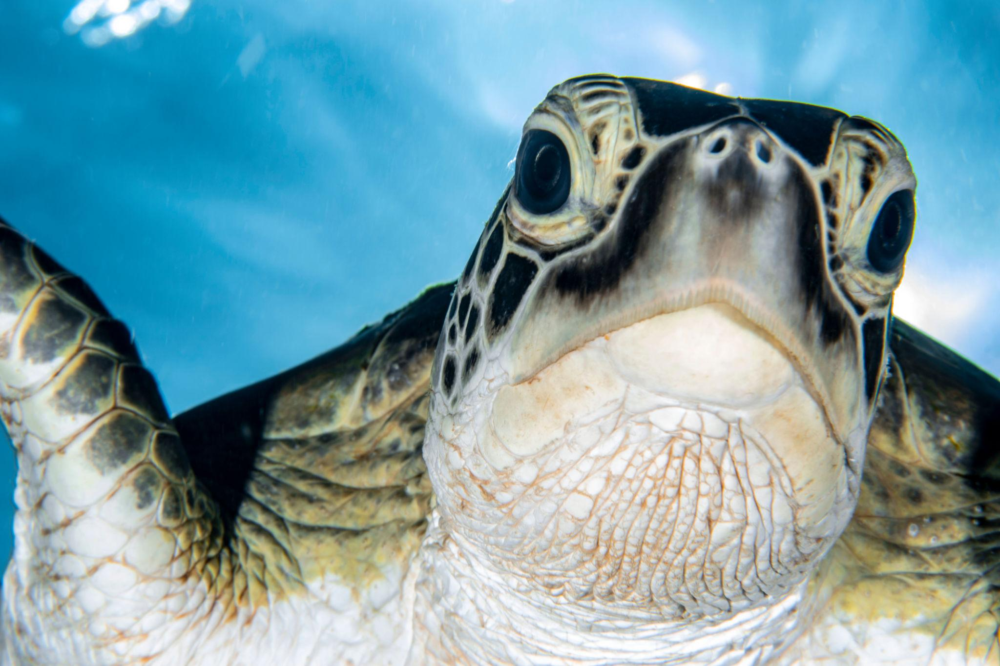

Introduction
Sea turtles are among the oldest living marine reptiles on Earth. These peaceful ocean travelers have existed for more than 100 million years and migrate across vast distances throughout the world’s oceans.
Sea turtles are important for healthy marine ecosystems, helping maintain seagrass beds and coral reef environments.
Turtle Anatomy
Sea turtles possess streamlined shells, strong flippers, and excellent underwater navigation abilities. Their bodies are specially adapted for long-distance swimming.


Habitat
Sea turtles inhabit tropical and subtropical oceans worldwide. Different species live near coral reefs, seagrass meadows, coastal beaches, and open oceans.
- Pacific Ocean
- Atlantic Ocean
- Indian Ocean
- Coral reefs
- Coastal nesting beaches
Population
Many sea turtle species are endangered due to human activity. Conservation programs focus on protecting nesting beaches and reducing ocean pollution.
Threats
- Plastic pollution
- Fishing net entanglement
- Habitat destruction
- Climate change
- Illegal egg harvesting
Conservation
Wildlife organizations protect sea turtles through marine reserves, beach conservation, rescue programs, and public awareness campaigns.
Quick Facts
| Feature | Information |
|---|---|
| Scientific Order | Testudines |
| Average Lifespan | 50–100 years |
| Diet | Seagrass, jellyfish, algae |
| Habitat | Marine oceans |
| Migration | Thousands of kilometers |